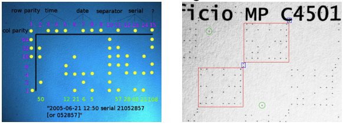

Application Forensic Artifacts
links: DF TOC - Forensic Artifacts - Index
This section explores the forensic analysis of various applications, focusing on uncovering user activities, application behavior, and potential security risks.
Applications
Common user applications
- Web browser: Browsing history, cookies, cache, and bookmarks provide a detailed view of user activity online.
- Email client: Stored emails, attachments, and metadata offer insights into communications and file exchanges.
- Realtime chat/video: Logs from chat and video applications can reveal conversations, call histories, and multimedia exchanges.
- Office suite: Documents, spreadsheets, and presentations, including their metadata, show user-generated content and activity.
- File managers: Applications like Finder (Mac), Explorer (Windows), and various Linux file managers track file access, modification, and transfer.
- Media players (music, movies): Usage history and playlists can provide information on media consumption habits.
- Photo/pic viewers/managers: Image files, edits, and metadata offer insights into visual content management.
- App store clients: Download and update history from app stores indicate installed and used applications.
- Social media apps, cloud sync/connect apps: Data from social media interactions and cloud synchronization services can show user engagement and data transfer.
Note: Electron apps are a modern alternative to traditional compiled apps, often used for cross-platform compatibility. They may store data in different locations and formats compared to traditional apps.
Professional applications
- Financial software: Includes applications for managing finances, which contain sensitive financial data and transaction histories.
- Company developed fat clients: Custom software developed by companies, often with extensive logs and unique data storage methods.
- Scientific, engineering apps: Specialized software for scientific and engineering tasks, storing project data, calculations, and research findings.
- Industrial control apps: Applications used in industrial settings to control machinery and processes, containing logs and operational data.
Special interest apps (potentially higher risk)
- Bitcoin wallets and clients: Store cryptocurrency transaction data and wallet information.
- File-sharing apps: Facilitate the sharing of files, which may include logs of shared and downloaded files.
- TOR clients: Used for anonymous browsing, these clients may store data on accessed TOR services.
- Hack/crack/exploit tools: Applications designed for security testing or malicious purposes, often containing logs of their activities.
- Malware binaries: Malicious software which can leave traces of its activities and impact on the system.
These applications can contain critical forensic artifacts that help understand user activities, security risks, and potential breaches.
Application Artifacts
- Installation date, last used: Helps establish a timeline of when the application was installed and last accessed.
- Configuration, plugins, user preferences: Provides insights into how the application is set up and customized by the user.
- Log data and audit trails: Records of application activities, errors, and changes, which are used to understand application behavior.
- Persistent data (cookies, cache, recents, history): Stores user interactions and preferences, revealing patterns and actions.
- User activity over time: Analysis of ongoing usage to track changes and user interactions.
- Application data/content, thumbnails: Includes stored documents, images, and other content managed by the application.
- Additional application metadata in data/content: Metadata within files and content that offers more context about creation, modification, and access.
- Abuse or misuse of an application: Identifies potential unauthorized or malicious activities conducted through the application.
- Correlate timestamps with other times: Matches application timestamps with other logs, physical access logs, CCTV, etc., to build a comprehensive activity timeline.
This examination helps in constructing a detailed picture of user interactions, application usage, and potential forensic evidence related to the application.
Examples
- Anomalie: Except an Android but have continuous mouse moving
- Have a printer with A4 configured not in US
- every person has unique set of apps produces a unique telemetry/fingerprint
Application data files
- Use open standards or proprietary formats: Files may follow widely accepted standards or be in unique, application-specific formats.
- Magic string (#!/bin/python): Identifiers within files that specify their type and can help in recognizing and handling them.
- Linux “file” command to identify file formats: A useful tool for determining the format and type of a file.
- Typical office, pictures, music, etc., can use standard viewers: Standard applications can open common file types, but use a write-blocker or read-only image to prevent alteration.
- Some file containers may be compressed or encrypted: Requires special handling to access the content.
- “Compound” files have nested files (email attachments): Files that contain other files within them, such as emails with attachments, which need extraction and separate analysis Filesystem timestamps only exist for files on the operating system (e.g. not in email attachments)
Proprietary formats
- Need reverse engineering to understand: Proprietary file formats may require analysis to decode and interpret.
- Pay for a license to access code, formats, API: Some formats require purchasing access rights or tools to read them.
- Use existing proprietary tools to extract data: Specialized tools designed for specific formats can help in data extraction.
- Commercial forensic tools are very good with proprietary data: These tools often have the capability to handle and analyze proprietary formats effectively.
Understanding and analyzing application data involves using a variety of tools and techniques to access, interpret, and safeguard the integrity of the data for forensic purposes.
File internal metadata
Metadata inside files (not from filesystem inode) includes:
- Hidden information (visually redacted text): Text that appears redacted but can be uncovered.
- Deleted text/images from office docs: Residual data that remains in documents even after deletion.
- User information (who created? who edited?): Details about the creator and editors of the file.
- Original file location (directory path): The initial directory where the file was stored.
- Location info (GPS): Geolocation data embedded in files, often found in photos.
- Timestamps (created, last modified, other): Various time-related data showing file history.
- Application used to create file: Information about the software used for file creation.
- Device used to record/capture images, sound, or video: Metadata indicating the recording device.
- Edit history (“track changes”): Records of modifications and changes made to the document.
- Technical details: Other specific data related to the file’s content and format.
Example tools:
- pdfinfo, pdfimages: Extract metadata and images from PDF files.
- oletools: Analyze and extract metadata from OLE (Object Linking and Embedding) files, commonly used in Microsoft Office documents.
These metadata elements are used for forensic analysis as they provide a detailed history and context for the file.
EXIF
EXchangeable Imagefile Format - Standardized metadata
- Originally for photos, today much more: Initially designed for digital photography, now used in various media files.
- Extensible, most common compatible standard: Widely adopted and adaptable for different types of files.
Forensic artifacts
- Device manufacturer, model, software version: Identifies the device and software used to capture the image.
- Timestamps, geolocation: Records the date, time, and GPS coordinates of where the photo was taken.
- Resolution, aspect ratio, compression: Details about the image quality and format.
- Exposure, color info, if flash was used: Information on how the photo was taken, including light settings and flash usage.
- Device orientation, which camera (front/back): Indicates the position of the device and which camera was used.
- Proprietary extensions: Additional metadata specific to certain devices or software.
Example tools
- exif, exiftool: Tools for extracting and analyzing EXIF data.
Printer Machine Identification Code (MIC)
Most color laser printers include a watermark:
- Tiny yellow dots printed on paper: These dots are nearly invisible to the naked eye and are scattered across the printed page.
- Developed to investigate counterfeit money: Originally designed to track and prevent the production of fake currency.
- Also used to investigate death threats, terrorism, etc.: Utilized in various criminal investigations to trace the source of printed materials.
- Concerns about privacy: There are issues regarding the potential for misuse of this tracking information.
Note: The dots can be seen using a blue light, which makes them more visible for examination.
MIC provides a way to trace printed documents back to the specific printer, offering valuable forensic information in various investigations.

Analyzing executable code
Deeper analysis of executable files involves:
- Understanding program behavior without source code: The goal is to determine the function and actions of the executable.
- Phishing kits and browser injects using obfuscated JavaScript: These can be analyzed to uncover malicious activities hidden within complex or disguised code.
- Binaries as malware samples from attacks: Executables can be examined to identify and understand malware behavior and origins.
- Meta information in binaries (segments, sections): All executable files contain metadata that provides clues about their structure and purpose.
- Reverse engineering binaries: Techniques to deconstruct the executable to analyze its components and functionality, especially useful for malware.
- Static / Dynamic Analysis
Commercial forensic tools:
- Tools like FTK or EnCase provide basic metadata about executables but do not perform reverse engineering. They are used primarily for identifying and cataloging files rather than in-depth analysis of executable code.
Understanding executable code is needed to identify and mitigate threats, and involves a combination of metadata examination and reverse engineering techniques.
links: DF TOC - Forensic Artifacts - Index